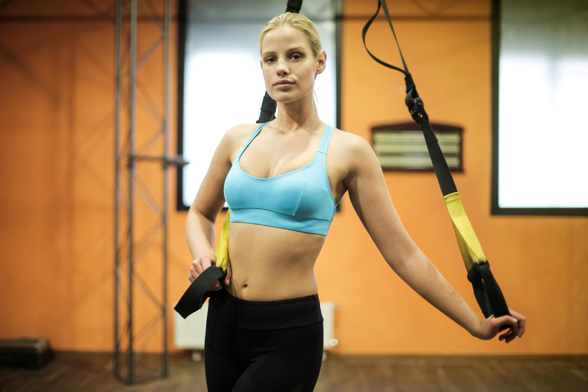
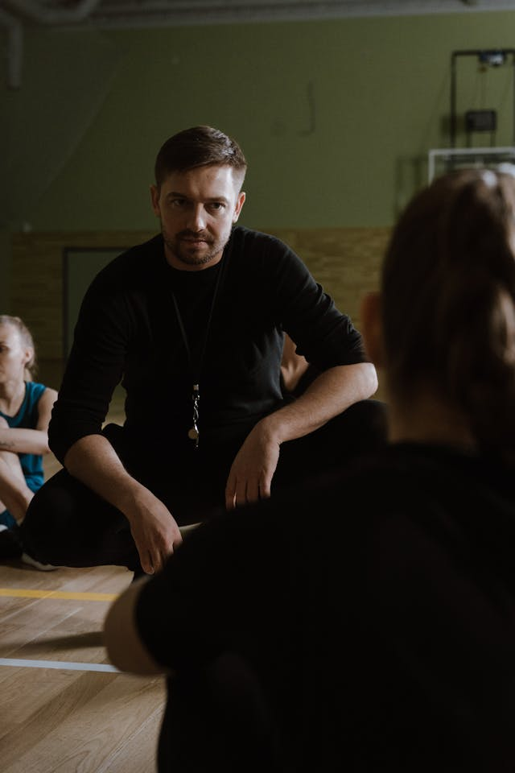
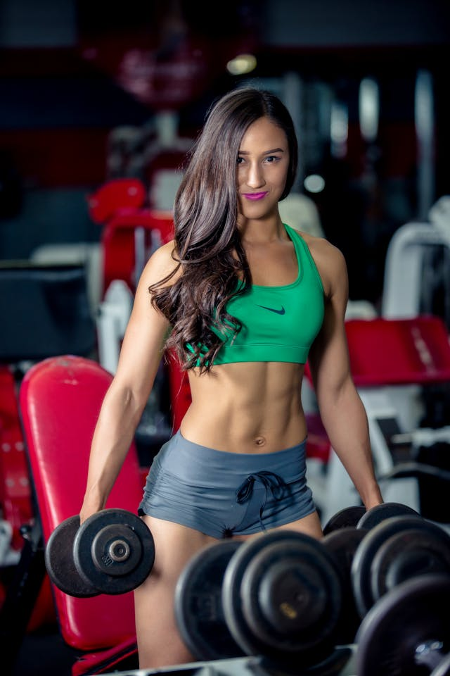
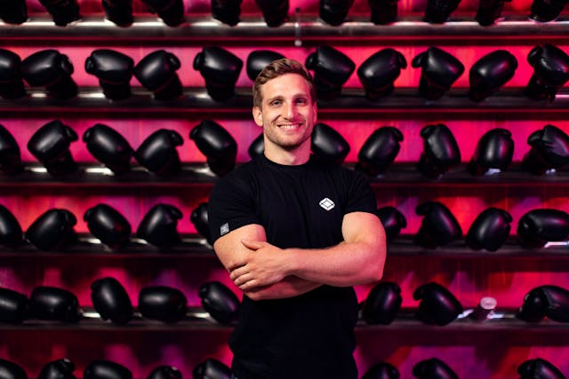

Ha eleged van abból, hogy fáj a hátad, merev vagy, vagy újra és újra feladod az edzést, mielőtt valódi eredményt látnál, akkor jó helyen jársz.
8 éve dolgozom személyi edzőként és pilates specialistaként, és ez idő alatt egy dolgot tanultam meg biztosan: nem neked nem megy a mozgás – csak eddig nem jól volt tanítva. Az edzéseimen nem “túlélni” kell a gyakorlatokat, hanem megérteni és érezni, mit csinál a tested.
Azoknak ajánlom magam, akik szeretnének formásabbak, erősebbek lenni, de nem akarnak fájdalmat, túlerőltetést vagy sablonos edzéstervet. Ha ülőmunkát végzel, stresszes vagy, gyakran feszült a hátad vagy a nyakad, és közben mégis szeretnél tónusos, nőies izomzatot, a pilates alapú edzéseim pontosan neked szólnak.
Tel.:06 70 946 7753

12 éve foglalkozom erőnléti edzéssel, és ha őszinte akarok lenni: nem hiszek a csodamódszerekben. Abban hiszek, amikor megtanulod használni a tested, erősebb leszel, és ezt a mindennapjaidban is érzed.
Azokkal dolgozom szívesen, akik nem csak fogyni akarnak, hanem formálódni, önbizalmat építeni és végre büszkék lenni arra, amit a tükörben látnak. Ha már próbáltál edzeni, de nem mertél súlyokhoz nyúlni, vagy épp ellenkezőleg, túl sokat vállaltál és megsérültél, segítek megtalálni az arany középutat.
Az edzéseimen nincs felesleges körítés, de van rendszer, figyelem és valódi fejlődés. Megtanítalak helyesen emelni, stabilan terhelni és folyamatosan építkezni — úgy, hogy közben nem mész tönkre, hanem egyre erősebb leszel.
Tel.:06 30 483 9752

Az edzéseim energikusak, változatosak és sosem unalmasak. Az aerobik dinamizmusa és a funkcionális tréning hatékonysága nálam kéz a kézben jár: egyszerre dolgozunk az állóképességen, az erőn és a koordináción. Nincs „csak kardió” és nincs céltalan ugrálás — minden gyakorlatnak oka van.
Azoknak ajánlom magam, akik szeretnének zsírt égetni, fittebbek lenni, és közben jól érezni magukat az edzésen. Ha motivál a lendület, feltölt a közös munka és fontos számodra, hogy az edzés ne teher, hanem élmény legyen, akkor garantálom, hogy mosolyogva, mégis elfáradva távozol.
Ha egy olyan edzőt keresel, aki húz, motivál és végig visz az edzésen, miközben figyel rád és a testedre is, várlak szeretettel.
Tel.:06 70 614 3482

6 éve tartok cross és személyi edzéseket azoknak, akik nem félnek dolgozni az eredményért, de fontos nekik a biztonság és a fejlődés is.
Az edzéseimen intenzitás van, de nem káosz. Megtanítalak helyesen emelni, gyorsabbá, erősebbé és állóképesebbé válni — legyen szó zsírégetésről, izomépítésről vagy egyszerűen arról, hogy jobb formában legyél, mint tegnap. A cross edzés nálam nem csak „kifulladásig hajtás”, hanem tudatosan felépített munka.
Azoknak ajánlom magam, akik szeretik a pörgést, a kihívásokat, és motiválja őket, ha minden edzésen egy kicsit túlléphetnek a saját határaikon. Kezdőkkel és haladókkal is dolgozom, az edzéseket mindig az aktuális szintedhez igazítva.
Tel.:06 70 410 8899